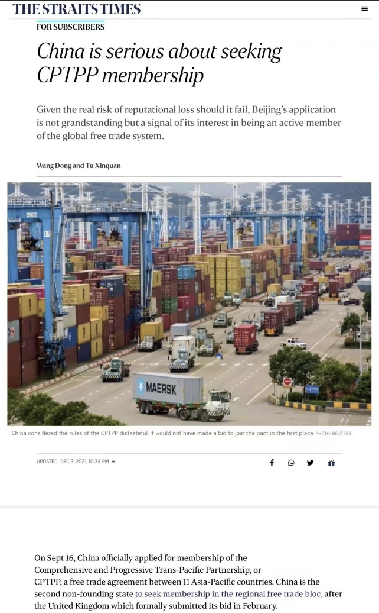

收录于合集
以下文章来源于北京大学中外人文交流研究基地 ，作者iGCU
 北京大学中外人文交流研究基地 .
北京大学中外人文交流研究基地 .
沟通人文，理解世界。 北京大学中外人文交流研究基地（iGCU）由教育部批准设立，服务十大中外高级别人文交流机制，旨在建设具有重要国际影响的一流中国特色新型智库、科研机构、高端交流平台和人才培养中心。

2021年12月3日，北京大学国际关系学院教授、中外人文交流研究基地执行主任王栋与对外经济贸易大学中国WTO研究院院长、北京大学中外人文交流研究基地学术委员屠新泉合作，共同撰写题为“China is serious about seeking CPTPP membership”的英文评论文章，发表于国际知名媒体新加坡海峡时报（ The Straits Times ），文章回应了国际上质疑中国加入CPTPP动机的声音，强调中国评估了CPTPP核心条款与中国国内法律、政策和经济框架的兼容性，经过慎重考虑后决定加入CPTPP，并做好了承担相关规则和责任的准备，而非国外分析家所指的“哗众取宠”或是“地缘政治的图谋”。
2021年12月3日，北京大学国际关系学院长聘正教授、中外人文交流研究基地执行主任 王栋 与对外经济贸易大学中国WTO研究院院长、北京大学中外人文交流研究基地学术委员 屠新泉 合作，共同在知名国际主流媒体新加坡 ** The Straits Times** （《海峡时报》） 发表了题为 “China is serious about seeking CPTPP membership” 的英文评论文章。

在文章开头，作者指出对于中国申请加入全面与进步的跨太平洋伙伴协定（CPTPP），国外不少分析家有着不同的解读，包括“哗众取宠”(grandstanding)论以及“地缘政治考虑论”等。作者认为这些对于中国加入CPTPP的批评与质疑并不成立，中国对于申请加入CPTPP是慎重其事的。作者指出，中国一直积极推动地区多边贸易倡议，包括区域全面经济伙伴关系协定（RCEP）。事实上， 中国将CPTPP与RCEP视为推动地区一体化前进的“两个轮子”。 作者进一步强调了中国梳理了CPTPP核心条款，并评估其与中国国内法律、政策和经济框架的兼容性。总的来看，CPTPP核心条款与中国经济改革的大方向是相一致的。因此，作者认为 中国加入CPTPP并非“哗众取宠”或是出于地缘政治的图谋，而是经过慎重的考虑，并做好了承担CPTPP规则与要求的准备。
此外，作者认为 中国能否成功加入CPTPP在很大程度上取决于外部因素 ，包括其他CPTPP成员国如何理解中国申请加入的动机，以及他们在多大程度上受到美国的影响。尽管日本、澳大利亚和加拿大等少数成员国可能有动机“将政治置于商业之上”并试图阻挠中国加入CPTPP，但是，中国已经展现出维护全球自由贸易体系的意愿，并进一步寻求更大程度的地区一体化。作者强调，美国及其盟友反复呼吁中国要遵守“基于规则的秩序”，并宣称CPTPP并没有针对任何国家（指中国）的地缘政治意图。现在既然中国已经正式提出加入CPTPP，那么如何对待中国的申请也将成为美西方说辞的试金石。
《海峡时报》创刊于1845年，总部位于新加坡，是世界最古老的报纸之一，也是全球最有影响力的媒体之一。王栋和屠新泉在国际主流媒体发表评论文章，发出中国声音， 从学术逻辑出发阐释了中国申请加入CPTPP的战略考量，有力批驳了西方的某些不实之词，使国际社会更好理解中国的发展道路和战略意图，有利于提升中国国际话语权和影响力。
The Straits Times（《海峡时报》）
文章原文
China is serious about seeking CPTPP membership
Wang Dong and Tu Xinquan
Given the real risk of reputation loss should it fall, Beijing’s application is not grandstanding but a signal of its interest in being an active member of the global free trade system.
On Sept 16, China officially applied for membership of the Comprehensive and Progressive Trans-Pacific Partnership, or CPTPP, a free trade agreement between 11 Asia-Pacific countries. China is the second non-founding state to seek membership in the regional free trade bloc，after the United Kingdom which formally submitted its bid in February.
The Chinese bid was no surprise as it came on the heels of President Xi Jinping’s announcement at the Asia-Pacific Economic Cooperation (Apec) Summitin November last year that China would “positively consider” joining the trade pact. China’s latest move has generated excitement at home and provoked some reservations abroad, leading some to wonder about Beijing’s motivation. What does China seek to gain from it?
Some analysts suggest that the move is just “grandstanding” and that CPTPP accession standards are too onerous for Beijing to achieve; that the gesture is aimed primarily at deflecting criticism of China’s backpedalling on economic reforms.
Others point to geostrategic motivations , with China embracing the CPTPP ahead of the United States to preempt Washington encircling Beijing by undermining its efforts to pursue technological decoupling and “resilient supply chains”.
Few foreign observers seem to believe Beijing is genuinely eager to join the CPTPP. We argue that the bid should be taken seriously.
In recent years, the world has witnessed regression in globalisation in the form of, among others, the rise of trade protectionism, US withdrawal from the Trans-Pacific Partnership (TPP, the precursor to the CPTPP), the scrapping of the Transatlantic Trade an5 Investment Partnership negotiations, and paralysis of the multilateral trade system anchored in the World Trade Organisation (WTO).
‘Two wheels of same vehicle’
Contrary to popular narratives in the West which portray China as also contributing to such backsliding, Beijing has in fact championed several major regional trade initiatives, including the largest ever trade bloc in history, namely the Regional Comprehensive Economic Partnership (RCEP).
The RCEP encompasses the 10 ASEAN members and its five FTA partners. Its “footprint” is considerable, covering 30 per cent of the world’s population (2.2 billion) and 30 per cent of global gross domestic product last year (US$26.2 trillion or S$35.8 trillion). RCEP, which takes effect in January, is poised to stimulate considerable regional integration.
Seven out of the 11 members of the CPTPP also belong to the RCEP. The Chinese leadership has long considered the RCEP and the TPP as “two wheels of the same vehicle” as far as regional integration is concerned.
The core articles of the CPTPP were adapted from the TPP and made public in 2015. Since then, Chinese government agencies and think-tanks have been carefully parsing these. This has led to a nuanced understanding of the implications of the rules and a realistic assessment of how accepting the articles would be compatible or in conflict with various domestic legal, political and economic frameworks.
China has clearly understood that joining the CPTPP requires the assimilation of these articles and that any space for negotiation largely centres around issues such as transition period, scope of applicability and market entry. In other words, had China considered the rules of the CPTPP distasteful , it would not have made a bid to join the pact in the first place.
It is worth noting that several key articles that are considered among the most difficult conditions to meet-such as the ones concerning state-owned enterprises (SOEs), labour standards, and data flow-involve domestic economic and social governance systems. But generally speaking, the articles in the CPTPP are consistent with the direction of reforms that China has been pushing over the years.
For instance, in recent years, China has been promoting measures transforming SOEs with soft budget constraints into market competition players, including the mixed-ownership reforms. It is acknowledged that such reforms are sometimes difficult to achieve partly because of the lack of pressure to break up vested interest groups. A tough negotiating process for entry to the CPTPP might help facilitate the so-called daobi gaige, thereby locking in momentum for Beijing to accelerate structural reforms.
A real obstacle to joining the CPTPP, from Beijing’s perspective, indeed does not come from China per se. Rather, the obstacle may lie in how the incumbent members view China’s bid or to what extent they are swayed by Washington.
Several of the 11 members of the CPTPP-Brunei, Chile, Malaysia, Mexico, New Zealand, Singapore and Vietnam-are supportive of China’s bid. Notwithstanding rhetoric about a “rules-based order” and driven by geoeconomic and political considerations, Washington may have little interest in allowing Beijing to join the regional pact billed as one with the most stringent standards. Harbouring grievances against Beijing, some key members might be tempted to play a less-than-a-facilitator role. For instance, Tokyo, Canberra or Ottawa might have an incentive to “put politics above business” and try to sabotage Beijing’s efforts.
Indeed, after China submitted its application, both Australia and Canada gave Beijing the cold shoulder, insisting that it could not join until it convinced members of its “track record of compliance” with existing trade agreements and WTO commitments, as well as of its ability to meet the “high standard rules” required by member states. On Oct 14, the day after Chile endorsed China’s bid, Japan’s newly-elected Prime Minister Fumio Kishida publicly questioned whether China was ready to meet and comply with the requirements of the CPTPP.
Given the real risk of reputational loss should China’s bid to join the CPTPP fail, Beijing’s move should be understood as more than rhetorical. Rather, it is strategic in the sense that Beijing aims to signal to both domestic and international audiences that it is determined to push for market-oriented reforms and is committed to uphold the global free trade system.
It shows that in a world that is increasingly defined by “strategic competition” , Beijing sees that the recipe for success lies in further opening up and linking itself more closely with the outside world.
The US and its allies have repeatedly called on China to abide by the “rules- based order” and also claimed that the CPTPP does not have geopolitical designs against any country (meaning, China).
Now that Beijing has made the decisive move to join the CPTPP, in a sense this serves as a litmus test of the West’s claims.
文章来源：Wang Dong and Tu Xinquan, “China is serious about seeking CPTPP membership,” The Straits Times , December 3, 2021
排版 | 柴昕彤
本文章来源于“北京大学中外人文交流研究基地”
本文章不代表本平台观点